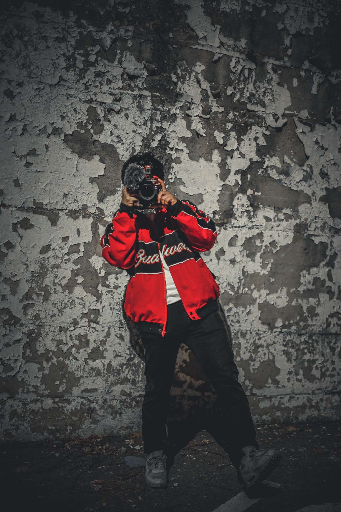

Cameras and Coffee
"Paparazzi training"

I'm excited to share that I've recently expanded my skillset to include photography services. While I may be relatively new to the field, I bring a fresh perspective and dedication to every project. My portfolio encompasses a range of photography genres, from captivating product shots and striking portraits to breathtaking landscapes and candid, spontaneous moments. Below, I've highlighted some of my favorite pieces. I'm confident that my versatile approach and passion for storytelling through imagery make me an excellent choice for your photography needs.